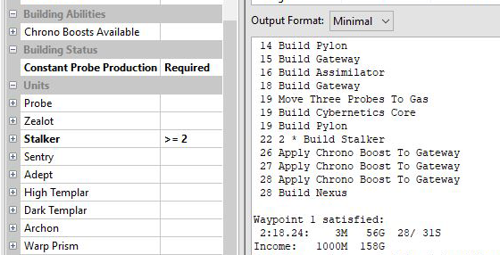

StarCraft
Gambit
Build order optimizer for StarCraft II. Calculates best time to obtain desired units, buildings or research. Works for Terran, Zerg and Protoss.
Features:
- intermediary waypoints with time limits
- minimal and detailed views
- gas micromanagement
- custom APM
- worker scouting
Latest version: 2.0.0
Release date: 07-Feb-2021
Data: Starcraft II v5.0.6 Multiplayer
